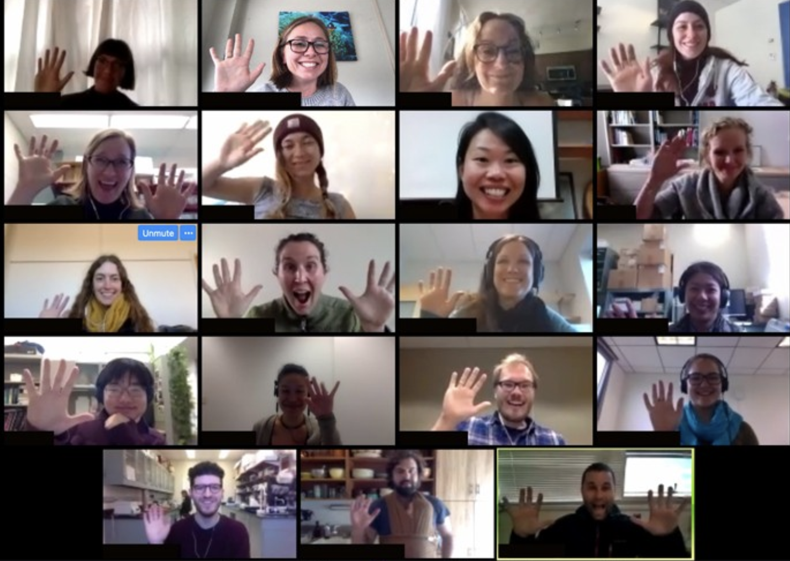
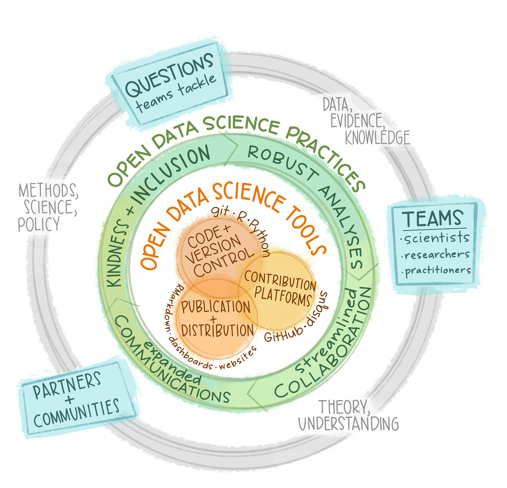
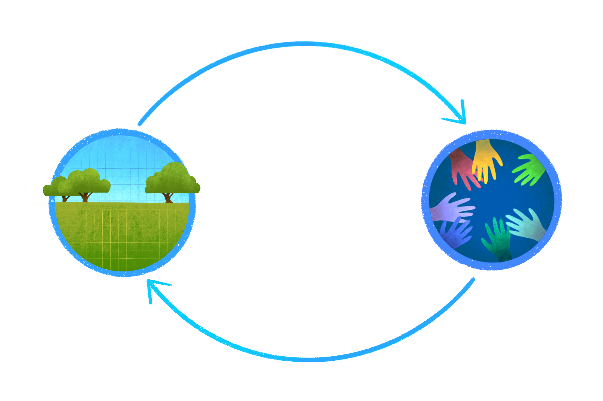
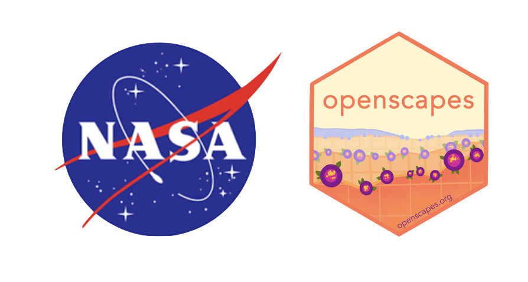

The tooling and people enabling reproducible, transparent, and inclusive practices for data-intensive science
Create space for discussions

Champions Cohort Calls
~7 research teams
2x/month
Seaside Chats
Individual teams
2x/month
Open data science in action
“This isn’t just about coding & GitHub, it’s about changing the way we do science” - Dr. Malin Pinsky, Rutgers*
“Openscapes has created a new way of thinking about merging empathy and science. That’s an invaluable gift to me.” - Dr. Halley Froehlich, UCSB
“Openscapes gave me a perspective of how all these open data science tools work together and can be used to bring natural resource conservation and ecology into the 21st century.” - Researcher, NOAA National Marine Fisheries Service
Working more openly and inclusively

Openscapes approach
Researcher-centered, focused on teams. Practice and feel safe working openly with yourself and your team; then ease into more.
Create space & place to explore & learn. Cohort Calls, Seaside Chats, Co-Working; GitHub, R, Python, Google Drive, Slack; Efficiency Tips & Inclusion Tips.
Cultivate relationships & real connections. Welcoming folks with diverse backgrounds; meeting where they are; skills to empower immediate work; kinder science.
Learning & iterating, openly. Not a checklist but a continual practice. Messy.
Supporting Earthdata research teams’ migration to the cloud
The overarching visionis to support scientific researcher teams using NASA EOSDIS data as they migrate their workflows to the cloud. We are doing this working with NASA Distributed Active Archive Centers (DAACs) over three years by:
Develop a cross-DAAC Mentor community
Empower science teams through the Champions program
“It was a really great week. The tutorials were AMAZING. Everyone did a great job, and everyone was very nice. I really appreciated welcoming environment. I don’t have a strong python background. But i was supported in learning all around”
It’s worth investing the extra time required to become familiar with cloud computing and the newer python libraries to access and manipulate satellite data. The few hundred lines of code I wrote this week will replace several thousand lines of old code using just numpy! It’s also a heck of a lot easier to read and use.
More work to do
The tutorials were fantastic, but I struggled to figure out when to use the various methods we learned in the tutorials.
Tooling & norms for co-creating
Co-created teaching resources
GitHub org: NASA-Openscapes
Jupyter Hub: 2i2c
Tutorial notebooks: python/jupyter
Notebook collections: quarto
Mentor Cohortnorms
Issues, branching & pull requests
Finding & re-using common parts
Notebook review & teaching feedback
Emerging themes:
A big time investment, very grateful for Mentors and DAAC Managers
Open science is a critical piece of research in the Cloud
Teaching-oriented documentation: documentation is easier to prioritize when it’s for real people (Hackathon book vs Cookbook)
National Center for Ecological Analysis & Synthesis (NCEAS), UC Santa Barbara (UCSB)
lowndes@nceas.ucsb.edu; @juliesquid
Join us:
Twitter: @openscapes Web: openscapes.org/contact openscapes.org/events Early 2022: NASA Champions nasa-openscapes.github.io
Further background:
Entryways to open data science and the power of welcome Lowndes 2020, plenary at Earth Science Information Partners (ESIP) Meeting
Openscapes: Better Science for Future Us Lowndes, Robinson 2021, plenary at SORTEE Meeting
Better Science for Future Us: Supporting NASA Earth science research teams’ migration to the cloud with Openscapes Robinson, Lowndes 2021, Pangeo Showcase, June 2021
If you had to pick one single thing that you’re taking away from the Cloud Hackathon, what would it be, and why?

I have a much better understanding of how cloud computing works and could be used in the future.
It’s worth investing the extra time required to become familiar with cloud computing and the newer python libraries to access and manipulate satellite data. The few hundred lines of code I wrote this week will replace several thousand lines of old code using just numpy! It’s also a heck of a lot easier to read and use.
I need to work at this consistently, not haphazardly, to make real progress in my skill set.
All of the positive energy and excitement around collaboration, cloud computing, and developing shared resources - it’s exciting to see this work gaining broader momentum and adoption. Code wise - Amy’s function for reading specific variables from an hdf5 file on the cloud into xarray.
Collaborators - there is a lot of knowledge within this group and it is nice to know that there are people working on similar problems and you have someone to talk to when creating code.
There are many options for accessing data, and expertise/experience is needed to figure these out. But- it’s possible and I now have many tools to do so. I feel confident I can figure it out with the tools I learned this week.
Using CMR and S3 FS to programmatically access data files on S3
What were some of the pain points you’ve encountered during the hackathon, or what are some concepts that you would want to revisit?
Working with large datasets, working with GIT through Jupyter HUB.
There were a number of different workflows to different datasets, as outlined in the tutorials. A general flow diagram or cheatsheet of what workflow goes best with which dataset and why would be useful.
The tutorials were fantastic, but I struggled to figure out when to use the various methods we learned in the tutorials.
API’s were super cool, I’m not aware about all the API’s used in the hackathon.
Cloud computing and git can be challenging to use if you don’t use them everyday. Without education and hackathons like this one, many scientists will have trouble transitioning to cloud computing unless they have the financial resources to support programmers.
I was insufficiently prepared with python skills….I think the cloud searching was over emphasized, because most of us came knowing which data sets we intend to use (e.g., by searching the PO.DAAC catalog for cloud enabled data sets).
I didn’t know what was meant by “On-Premise” data. I thought I knew. I thought it meant data on my local computer. The next day I needed to work with ‘On-premise’ data and then I figured out how I hadn’t really understood the whole ‘cloud’ computing framework. In fact I am still fuzzy but am now more aware of how fuzzy my understanding is.
The spin-up was longer than expected to learn how to access the data. Help was essential to understanding why I couldn’t access some data using scripts written for another dataset. Eventually will need more help with accessing troublesome datasets in the future.
I wish we had started at this very low level and had more emphasis on the basics (and less on what to do with the data after obtaining it): (1) Find the concept ID/short name for a given data set (could be via internet browsing) (2) Make a list of addresses to access the files in S3 (3) Access the files (ingest into python, perhaps with xarray)”
lack of cloud knowledge and experience to better understand the codes, and discern which codes/services are better or preferable than others.

Success Stories
With less than one year into this 3-year funded effort, this list will surely continue to grow…
Cross-DAAC community with active collaboration across five DAACs and IMPACT
Learner-centered and more confident teachers which allows for feedback between developers and DAAC mentors
Lowered barrier to NASA Earthdata cloud entry - partnership with 2i2c